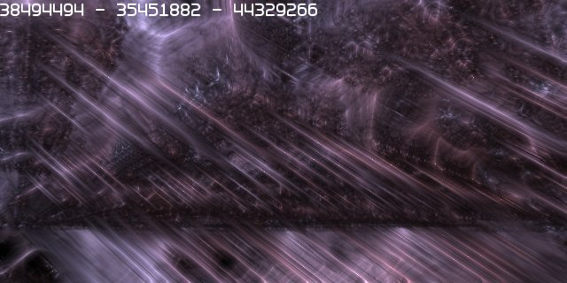

20070710 - Graphics Engine Introduction
How do you make the impossible possible?
At its core, the Atom Game Engine holds a compressed solid cellular representation of the entire world which is hierarchically expanded and contracted based on the players field of view,
local surroundings, and interactions with the world and other players.
As time passes the Atom World reclaims the low detail changes which regrow into the world's ever changing natural "low energy" state
which is defined by the simple compressed animated procedural cell structure which defines the world itself.
The Atom Graphics Engine is directly integrated with the solid cellular representation of the Atom World.
Due to Atom's unique world representation, you can literally zoom into the molecular structure of anything, even on the inside.
This also works in reverse, Atom is able to simplify any structure, and thus has infinite level of detail control.
Atom has no limitations on sparseness of objects, or field of view.
It seamlessly and adaptively expands and contracts its representation of the world based on what the eye is looking at.
